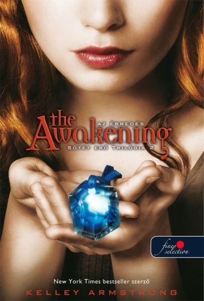
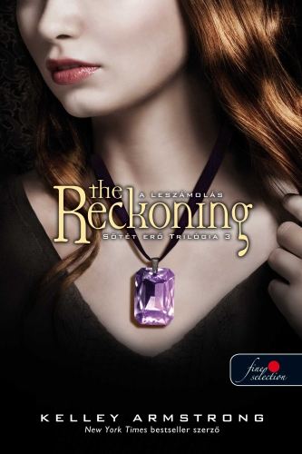
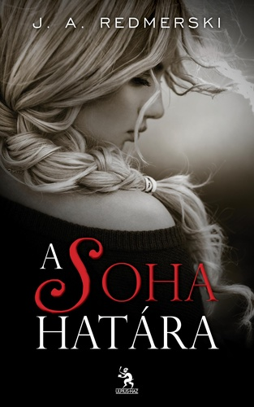
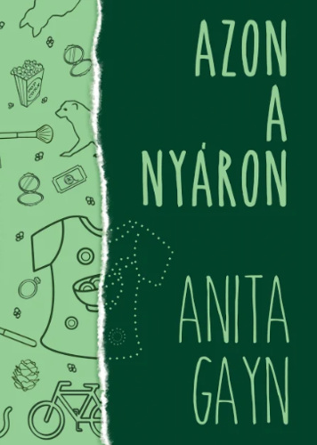
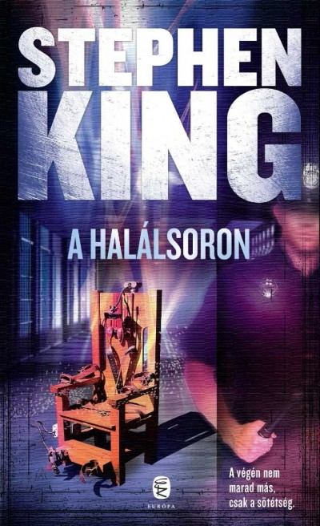
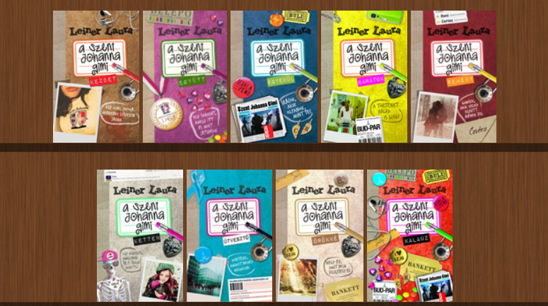

Szívem csücskei
Ahogy láthatod a fő témát az általam olvasott könyvek adják. Első körben az én szubjektív véleményem alapján létrehozott top 5 könyvvel/könyv sorozattal találkozhatsz.
Ez a sorozat 3 kötetből áll. Mióta először olvastam körülbelül 2015-ben, minden évben újra olvasom. Elragadó történet, csodás leírásokkal. Nagyon örültem mikor a 18. születésnapomra megszerezték nekem az összes részét könyvbe is, mivel már régóta nem lehet kapni.
Chloé Saunders nem akar mást az élettől, mint bármelyik tinédzser: esélyt arra, hogy befejezhesse az iskolát, barátokat találjon, és talán egy fiút is magának. Amikor azonban elkezd szellemeket látni, megérti, hogy az élete soha nem lesz olyan, mint a többieké. A figyelmét követelő szellemektől körülvéve Chloé végül összeomlik, és bekerül egy kisebb elmezavarral küzdő fiatalok számára fenntartott otthonba. A Lyle Ház először normálisnak tűnik, de ahogy Chloé sorra megismeri a többi ápoltat - a sármos Simont és gyanús, soha nem mosolygó bátyját, Dereket, a visszataszító Torit és Rae-t, aki túlságosan is szereti a tüzet - rájön, hogy valami különös, baljós dolog köti össze őket, amit nem lehet a szokásos „problémás a gyerek” viselkedéssel magyarázni. Ahogy együtt nemsokára azt is felfedezik, hogy a Lyle Ház sem egy a szokásos otthonok közül…
Chloé Saunders menekülés közben őrült felfordulást okoz… szó szerint… Chloé valaha teljesen hétköznapi tinilány volt - legalábbis ezt gondolta. Aztán rájött a megdöbbentő titokra, hogy nem más, mint egy két lábon járó tudományos kísérlet. Születésekor az Edison Csoport névre hallgató gonosz tudóscsapat genetikai módosítást hajtott végre rajta. Chloé megváltozott, egyedülálló képességekkel rendelkező nekromanta lett, aki szellemeket lát, feltámasztja a halottakat, és ez gyakran szörnyűséges következményekkel jár. S ami még rosszabb, egyre erősödő képessége fenyegetést jelent az Edison Csoport fennmaradó tagjai számára, akik úgy döntenek, véget kell vetni ennek a kísérletnek - örökre…
A tizenöt éves Chloé Saunders hétköznapi életet szeretne élni. Nem adatik meg neki. Chloé ugyanis genetikai módosítás áldozata, olyan nekromanta, aki akarata ellenére képes felébreszteni a holtakat. Chloé, és hasonszőrű, különleges „tehetséggel” megáldott (vagy inkább elátkozott?) társai az életüket mentik a pokoli szervezettől, amelyik létrehozta őket. És, ha mindez nem elég, Chloé gyengéd érzései a testvérpár - Simon, a kedves varázsló, és bátyja, Derek, az annyira nem kedves vérfarkas - iránt összezavarják a fejét. Ráadásul az a szörnyű gyanúja, hogy szíve mindinkább a vérfarkas felé hajlik… Kétségtelenül nem hétköznapi történet!
Ez a könyv is egy sorozat része, mégis az első kötetet emelném ki. Ezzel a könyvel 2017-en ismerkedtem meg. Nagyon érzelemdús, szívszorító történet. Nagy nyomot hagyott bennem. Vannak szokásaim, amik a mai napig megmaradtak ennek a könyvnek a hatására, például minden nap, mikor elindítom az első zenét a telefonomon, véletlenszerű lejátszásra rakom, és hagyom, hogy a szerencse dötse el az aznapi hangulatom a zeneszám által.
Camryn Bennett még csak húszéves, de azt hiszi, pontosan tudja, milyen lesz majd az élete. Ám egy vad éjszaka után az észak-karolinai Raleigh legmenőbb belvárosi klubjában ismerősei és önmaga elképedésére úgy dönt, otthagyja megszokott életét, és elindul a vakvilágba. Egy szál táskával és a mobiltelefonjával felszáll egy távolsági buszra, hogy megtalálja önmagát – és helyette rálel Andrew Parrish-re. Andrew úgy éli az életét, mintha nem lenne holnap. Olyan dolgokra veszi rá Camrynt, amilyenekre a lány sosem hitte magát képesnek, és megmutatja neki, hogyan adja meg magát a legmélyebb, legtiltottabb vágyainak. Hamarosan ő lesz Camryn merész új életének központja - olyan szerelmet, vágyat és érzelmeket kelt, amilyeneket a lány korábban elképzelni sem tudott. De Andrew nem árul el mindent Camrynnak. Ez a titok vajon örökre összehozza őket - vagy mindkettőjüket elpusztítja?
Ez a könyv különösen kedves a szívemnek, mivel ez volt az első, amit nem fizikai könyvként, hanem e-könyvként olvatam. Egy csodás utazás kezdődött el ekkor. Én a hivatalon megjelenés előtti évben már olvashattam ez által a könyvet, mivel hamarabb jelent meg az írónő oldalán, mint fizikai könyvként.
Lauren, hogy elkerülje az egész nyáron át tartó szobafogságát, elfogadja nővére barátainak meghívását egy nyaralásra, ahol végre esélyt kap arra is, hogy meghódítsa az egyetlen srácot, akibe igazán szerelmes volt, és akit sosem tudott kiverni a fejéből.
A horror és a borzongás mindig is közel állt a szívemhez és biztosan állíthatom, nem véletlenül hívják Kinget a horror koronázatlan királyának. Több könyvet is olvastam már tőle, de nem akartam mindenki nagy kedvencét, a Ragyogást belerakni a listába. Tisztában vagyok azzal, hogy a könyvből készült film is nagy sikert aratott a rajongók körében, viszont nekem van egy olyan elvem, miszerint vagy elolvasok egy könyvet, vagy megnézem a filmet. Jópár csalódás után fogadtam ezt meg, és szerintem itt kimondottan jól döntöttem, hogy a könyvet választottam.
A Cold Mountain fegyház E blokkjában, a siralomházban, néhány rab várja, hogy elérkezzen az idő, amikor végig kell mennie a halálsoron, melynek a végén ott magasodik a villamosszék, az Öreg Füstös. Mindnyájukat - Eduard Delacroix-t, a keszeg kis franciát. „Vad” Billy Whartont, az eszelős fiatalembert, és John Coffeyt, a hatalmas termetű, folyvást könnyező négert - főbenjáró bűnért, többszörös gyilkosságért ítélték halálra. Paul Edgecombe, a blokk lelkiismeretes főfoglára azonban bizonyos meglepő, mondhatni, csodás események hatására úgy érzi, néhány dolognak utána kell járnia. Lehet, hogy a három halálraítélt közül az egyik ártatlan? S ha igen, vajon módjában és hatalmában áll-e tennie is valamit ez ügyben, Hisz Paul tudja, milyen óriási kockázatot vállal megbízható munkatársaival együtt, nemcsak az állásukat veszíthetik el, de ők maguk is börtönbe kerülhetnek. Amikor megtudja az igazságot, nincs sok választása…
Az ötödik helyre muszáj volt betennem egy Leiner Laura könyvet. Szeretem az írónő munkásságát, szinte minden könyvét olvastam és a kistini korszakom meghatározó alakja. A sorozat 8+1 részes, viszont a 8. rész két kötetben jelent meg, e miatt tulajdonképpen 10 kötetet foglal magába a sorozat. Megkímélnélek titeket mindegyik leírásának összegzésével, így csak egy listát hozok a sorozat részeinek pontos listájról.
Ha a felsorolt könyvek alapján érdekel miket olvastam még az elmúlt években nézz szét!